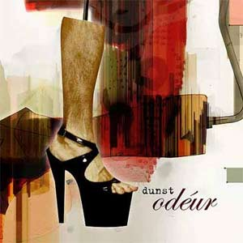

"Odéur" - First Dunst compilation.
17/03 - 2005.

Dennis Agerblad
contributes with 2 songs.
SONG 1 - I'm Just A Normal Man (in a dress)
SONG 12 - Midnight Lover
Download at:
TDC Online Musik
or
iTunes
Album 80 kr.
One track 8 kr.
Released by:
Tunga musiK